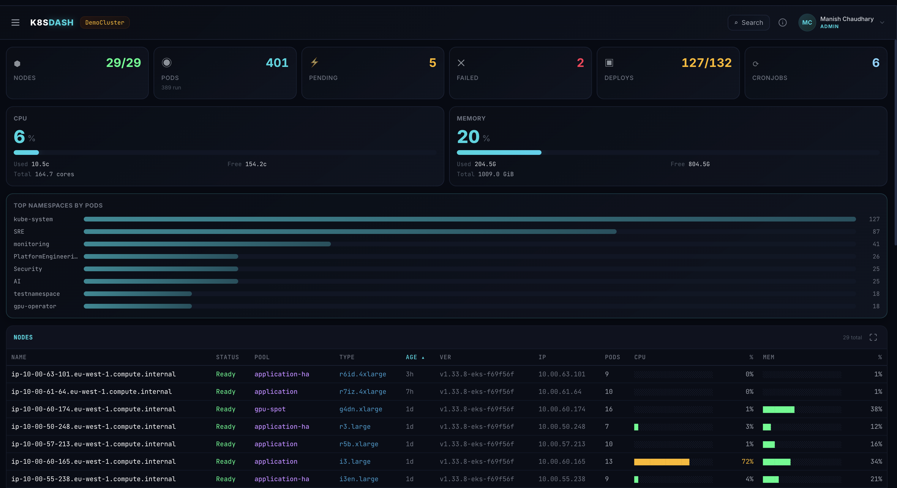
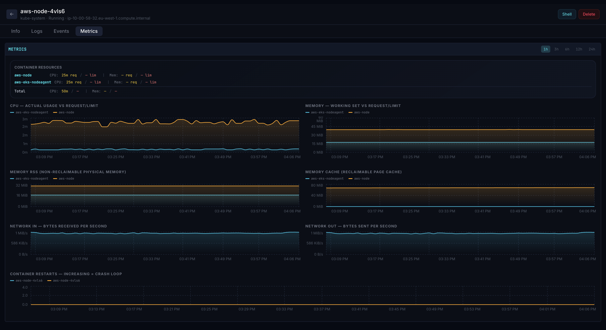
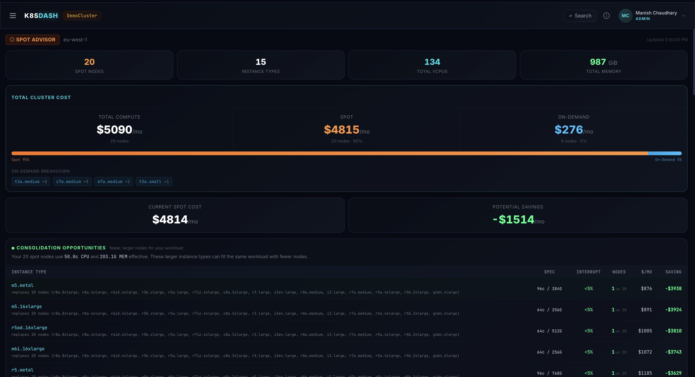

Open source · Apache 2.0 · v1.2.8
The dashboard you'd build
if you actually cared.
Open-source Kubernetes dashboard with live cluster state, streaming logs, in-browser shell, AI diagnose, JIT access, and cost analysis — in a single Go binary. Runs in your cluster. Your data, your machine.
kube-argus · overview

kube-argus · node detail

kube-argus · pod metrics

kube-argus · spot advisor
